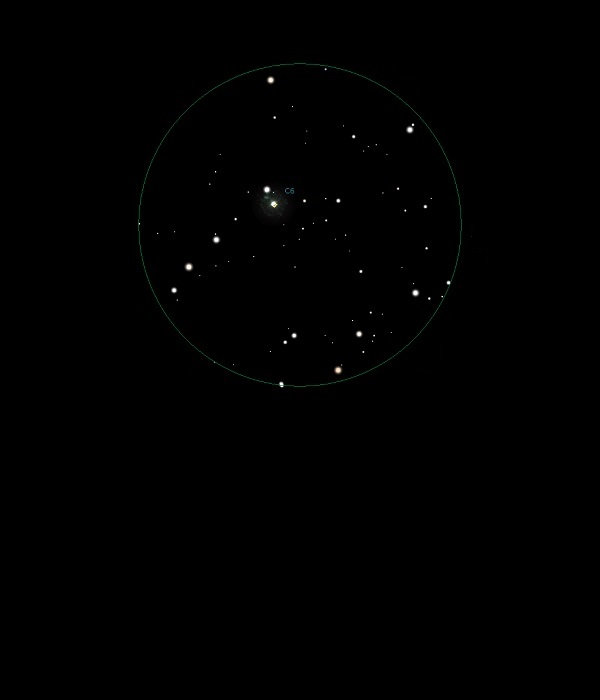

NGC 6543
Planetary Nebula in Draco
NGC 6543
Mag 9.0
The Cats
Eye Nebula, Caldwell 6
15/06/15
To start with I wasn't sure what I was observing since NGC
6543 appears as an out of focus star in 25mm next to a star of
similar magnitude at 9.75
Very bright centre which could be the central star and then a
small tight ball
No feel of any structure, even when viewed in 12mm with Barlow
at a magnification of 180x
(Since NGC 6543 is very close to the North Celestial Pole I
had to move the tripod round by 120º since when the equatorial
axis was pointing correctly the telescope could not view that
part of the sky!)